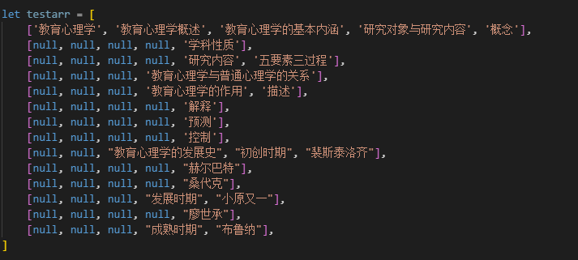

原文出处:本文由博客园博主若水无痕提供。
原文连接:https://www.cnblogs.com/zzh965390267/p/12028207.html
原文连接:https://www.cnblogs.com/zzh965390267/p/12028207.html
xmind文件如图所示，
最终生成的数据结构如图：
2,选择导出为excel文件，导出的excel文件打开如图
3，安装node读取excel模块 cnpm i node-xlsx --save
4,使用node-xlsx模块读取excel文件，注意文件名不能为中文,
使用示例
var xlsx2json = require("node-xlsx");
var list = xlsx2json.parse("./test3.xlsx");
读取出的excel数据如图
5，分析该数据结构和实际的excel可以发现，node模块读取是按excel一行一行的读取，未读取到的就是null，例如，第一行读取到的
因为第一行中一些单元格合并为了一个，所以node模块读取的时候是按照一行读取的，所以数组第二项读取的前四项都为空
接下来是实现将读取到的数组转换为json数据的核心部分，
主要由3个函数组成
function arrToJson(arr, column) { //将数组转换为嵌套的json对象
let MaxLength = arr.length - 1;
let deep = {}
for (let index = MaxLength; index >= 0; index--) {
if (arr[index] === null) {
break;
}
let obj = {};
if (Object.keys(deep).length > 0) {
let childArr = []
obj['id'] = String(column) + '_' + String(index)
obj['text'] = arr[index]
childArr.push(deep)
obj['children'] = childArr;
deep = obj
} else {
obj['id'] = String(column) + '_' + String(index)
obj['text'] = arr[index]
deep = obj
}
}
return deep;
}
改函数作用是将每一行中的有效数据转为具有层级的数形结构，对比node模块读取出的数据和excel的数据规律可以发现
每一行数据可以转化为如图嵌套的结构，数组的长度就是当前行的最大深度，
将最初的数组的每一项都转为该结构如图
6，再次分析node模块读取的数据和excel规律可以发现
第二行为个null，代表第一行的前四个数据，因此，只需要将第二行生成的嵌套对象和第一行生成的嵌套对象合并，再将第二行数据和第三行数据合并3->4合并，后边以此类推即可得到完整的tree，
但是有一个问题，假设同样有两个第三级的数据我怎么能知道后一项是插入第三级的哪一项中呢，其实观察数据的规律不难发现，每次插入的时候只需要获取当前数据所在项的深度，然后插入到比当前数据深度多一的父级的最后插入当前数据，即可保证插入的层级不会错误，
实现代码如下
function createTree(arr) { //生成最终树
let renderTree = {}
arr=JSON.parse(JSON.stringify(arr))
arr.forEach((element, index) => {
let result = arrToJson(element, index);
if (Object.keys(renderTree).length > 0) {
renderTree = getMergeTree(renderTree, result)
} else {
renderTree = getMergeTree(result, null)
}
});
writeJson(renderTree)
}
function getMergeTree(parentobj, currentobj) { //生成合并的树
if (currentobj == null) {
return parentobj;
}
let resultObj = {}
DFS(parentobj, currentobj);
function DFS(parentobj, currentobj) {
let idNumber;
try {
idNumber = Number(currentobj.id.split('_')[1]) - 1
} catch (error) {
idNumber = -10;
}
let child = parentobj.children;
if (child !== undefined && child.length > 0) {
let childrenLength = child.length - 1
let parentId = Number(parentobj.id.split('_')[1])
if (parentId == idNumber) {
child.push(currentobj)
}
DFS(child[childrenLength], currentobj)
resultObj = parentobj
}
}
return resultObj
}
该函数是一个DFS搜索算法，搜索出比当前级大一级的父级对象树，并且在父级树的children数组的最后一项插入当前对象
如图是前四项生成的json对象和第五项的合并

完整代码如下：
var xlsx2json = require("node-xlsx");
var list = xlsx2json.parse("./test3.xlsx");
var fs = require("fs")
let testarr = [
['教育心理学', '教育心理学概述', '教育心理学的基本内涵', '研究对象与研究内容', '概念'],
[null, null, null, null, '学科性质'],
[null, null, null, null, '研究内容', '五要素三过程'],
[null, null, null, '教育心理学与普通心理学的关系'],
[null, null, null, '教育心理学的作用', '描述'],
[null, null, null, null, '解释'],
[null, null, null, null, '预测'],
[null, null, null, null, '控制'],
[null, null, "教育心理学的发展史", "初创时期", "裴斯泰洛齐"],
[null, null, null, null, "赫尔巴特"],
[null, null, null, null, "桑代克"],
[null, null, null, "发展时期", "小原又一"],
[null, null, null, null, "廖世承"],
[null, null, null, "成熟时期", "布鲁纳"],
]
createTree(list[0].data)//使用node读取的数组数据
// createTree(testarr)//测试，使用testarr数据可直接查看生成的数据，测试数据采用真实的一部分数据
// let totalobj={"id":"0_0","text":"教育心理学","children":[{"id":"0_1","text":"教育心理学概述","children":[{"id":"0_2","text":"教育心理学的基本内涵","children":[{"id":"0_3","text":"研究对象与研究内容","children":[{"id":"0_4","text":"概念"}]}]}]}]}
// let resultObj= getMergeTree(totalobj,{"id":"1_4","text":"学科性质"})
// console.log(JSON.stringify(resultObj));
function createTree(arr) { //生成最终树
let renderTree = {}
arr=JSON.parse(JSON.stringify(arr))
arr.forEach((element, index) => {
let result = arrToJson(element, index);
if (Object.keys(renderTree).length > 0) {
renderTree = getMergeTree(renderTree, result)
} else {
renderTree = getMergeTree(result, null)
}
});
writeJson(renderTree)
}
function arrToJson(arr, column) { //将数组转换为嵌套的json对象
let MaxLength = arr.length - 1;
let deep = {}
for (let index = MaxLength; index >= 0; index--) {
if (arr[index] === null) {
break;
}
let obj = {};
if (Object.keys(deep).length > 0) {
let childArr = []
obj['id'] = String(column) + '_' + String(index)
obj['text'] = arr[index]
childArr.push(deep)
obj['children'] = childArr;
deep = obj
} else {
obj['id'] = String(column) + '_' + String(index)
obj['text'] = arr[index]
deep = obj
}
}
return deep;
}
function getMergeTree(parentobj, currentobj) { //生成合并的树
if (currentobj == null) {
return parentobj;
}
let resultObj = {}
DFS(parentobj, currentobj);
function DFS(parentobj, currentobj) {
let idNumber;
try {
idNumber = Number(currentobj.id.split('_')[1]) - 1
} catch (error) {
idNumber = -10;
}
let child = parentobj.children;
if (child !== undefined && child.length > 0) {
let childrenLength = child.length - 1
let parentId = Number(parentobj.id.split('_')[1])
if (parentId == idNumber) {
child.push(currentobj)
}
DFS(child[childrenLength], currentobj)
resultObj = parentobj
}
}
return resultObj
}
function writeJson(arrlist) {
fs.writeFile('person.json', JSON.stringify(arrlist), function (err) {
if (err) {
console.error(err);
}
console.log('----------新增成功-------------');
})
}
博客地址：https://www.cnblogs.com/zzh965390267